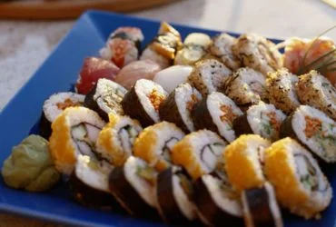
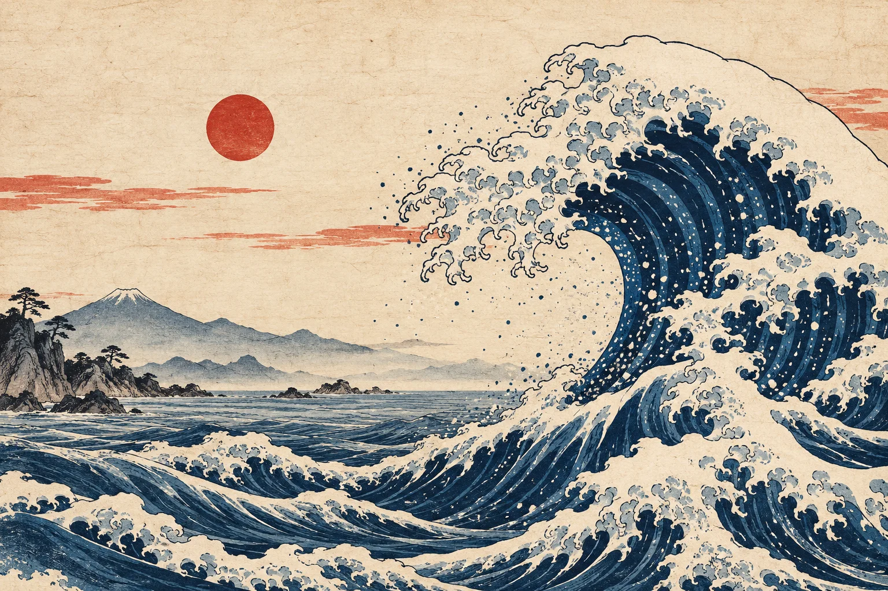
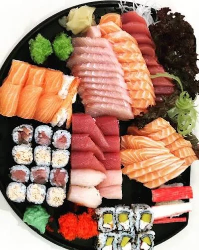

PARA COMPARTILHARCombinado Naka
R$ 12932 peças entre sushis, sashimis e rolls. Nossa seleção para dois.
32 PEÇAS · SERVE 2 PESSOASBELO HORIZONTE · DESDE 2018
Cortes precisos, ingredientes frescos e o prazer de compartilhar. Um pequeno encontro com o Japão, aqui no Naka.
FEITO À MÃO. SABOREADO SEM PRESSA.


OCEANO À MESA O nosso combinado da casa02 / NOSSA CASA
O Naka nasceu da vontade de transformar uma refeição em um momento que fica. Uma mesa acolhedora, bons ingredientes e o cuidado que começa muito antes do primeiro prato.
Da escolha do peixe à delicadeza do corte, acreditamos que o sabor está nos detalhes. Traga sua companhia favorita. Do resto, a gente cuida.
Encontre sua mesa03 / O SEU PRÓXIMO ENCONTRO
Rua das Cerejeiras, 128 · Santa Tereza
Belo Horizonte, MG
Terça a quinta · 18h às 23h
Sexta e sábado · 18h à meia-noite
Domingo · 12h às 22h
(31) 3333-0128
oi@sushinaka.example